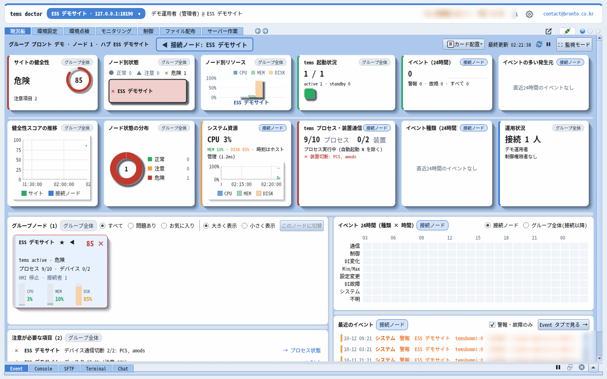
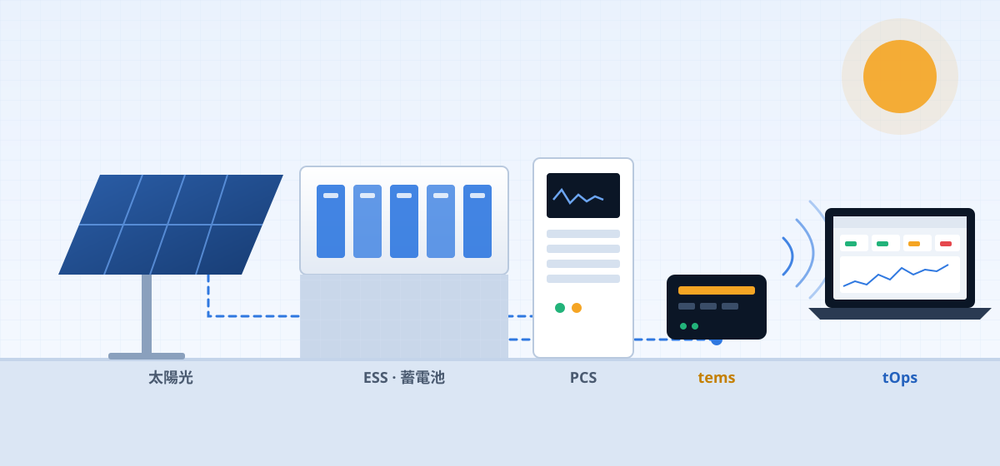

設備を動かすエンジンから、
そのエンジンを守る運用まで。
bronto は、エネルギー設備を制御するエンジン tems、そのエンジンをリモートで運用するツール tOps、現場のソフトウェアを安全に配布・更新しライセンスを管理する tVault をつくっています。必要なものだけを個別に、またはひとつの構成としてまとめて導入できます。

制御 · 運用 · 配布、3つの製品
tems が現場の設備を制御し、tOps がその tems サーバー群をリモートで運用し、tVault がすべてのプログラムのインストール・更新・ライセンスを担います。
tems
- Modbus などで現場機器と通信し、設備を制御
- イベント・アラーム、履歴、スケジュールをモジュール単位で構成
- x64 サーバーから ARM64 組込みコントローラーまで対応
tOps
- 複数の現場をひとつの画面で見るダッシュボードとモニタリング
- プロセス制御、設定編集、ファイル配布・バックアップをリモートで
- 設定を一度に点検する環境チェック · オフラインモード
- Android アプリ - アプリを閉じても届く通知、サーバーのファイル・コマンドまで
- 한국어 · English · 日本語 · 中文、14日間の無料トライアル
tVault
- 署名付き配布と自動更新 · 失敗時は自動ロールバック
- リング(配布段階)と顧客担当者によるメール承認
- エディション・期間・期限切れ時の動作まで、ライセンスを一か所で
- 顧客中心の Web コンソール · 機器ごとの結果メール
- Web サイトからのトライアル自動開通 · スマートフォンへのプッシュ通知
tdoctor を14日間無料でお試しください
Pro の全機能 · Windows PC 1台 · 支払い情報不要。名前とメールアドレスを入力するだけで、メールで届くインストーラーひとつでインストールが完了します。サーバーがなくても、オフラインモードで tems の設定を点検・編集できます。
現場の設備から運用者まで、ひとつにつなぐ
機器の信号は tems が受けて制御し、tems サーバーの状態と設定は tOps がリモートで管理します。これらすべてのプログラムのインストール・更新・ライセンスは tVault が担います。

設備 · 機器
PCS、BMS、計測器、太陽光インバーター、I/O
制御エンジン
機器通信 · 制御 · イベント · 履歴 · スケジュール
リモート運用
運用者 · エンジニア
状態確認、障害対応、設定変更、配布
新しいバージョンは安全に、顧客のサーバーには承認した機器だけに
リリースと配布を分けました。社内 → パイロット → 顧客の順に広げ、顧客の担当者はメールで届いたリンクから機器とインストール時刻を選んで承認します。完了すると、機器ごとの更新時刻を記した結果メールが届きます。


bronto が選ばれる理由
安定した制御
機能ごとに分かれたプロセス構成なので、ひとつの機能の問題が全体に広がりません。
リモート運用
現場に行かなくても、状態確認、再起動、設定変更、ファイル配布まで行えます。
安全な更新
tVault は署名されたバージョンだけを、承認した機器だけにインストールし、失敗すると自動でロールバックします。
開発元による直接サポート
エンジンと運用ツールを自ら開発したチームが、現場の要件に合わせて技術サポートします。
自社にはどの構成が合うでしょうか?
事業の形態によって必要な製品は異なります。よく選ばれている構成をご紹介します。

ESS 事業者
複数サイトの蓄電設備を24時間安定して運転し、リモートで管理する必要があります。

PCS メーカー
自社の PCS に組み込む実績あるコントローラーエンジンが必要です。ARM64 組込み環境に対応しています。

発電所運営会社
点在する現場を一か所で監視し、障害時にすばやく対処できる必要があります。
個別にも、まとめても導入できます
現在の環境に合わせて、必要な製品から始めてください。あとから他の製品を追加することもできます。
tems 単体
- 機器通信 · 制御エンジン
- イベント · アラーム · 履歴 · スケジュール
- x64 / ARM64 対応
- リモートダッシュボード · モニタリング
- リモート設定編集 · 配布
tems + tOps + tVault 統合
- 機器通信 · 制御エンジン
- イベント · アラーム · 履歴 · スケジュール
- 複数現場のダッシュボード · モニタリング
- 設定編集 · プロセス制御 · 配布
- tVault で配布・更新・ライセンスを管理
- 導入から運用までひとつのサポート窓口
tOps 単体
- 複数現場のダッシュボード · モニタリング
- プロセス制御 · 設定編集
- ファイル配布 · バックアップ · リモートコマンド
- アカウント · グループ権限、チームチャット
- 設備制御エンジン
導入事例
自社の現場に合った構成を一緒に探しましょう
導入相談、画面デモ、技術的なご質問、いずれも歓迎します。担当者から直接ご連絡いたします。